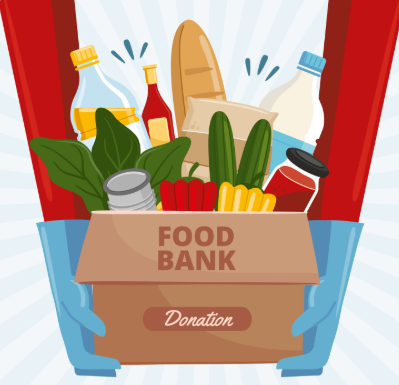
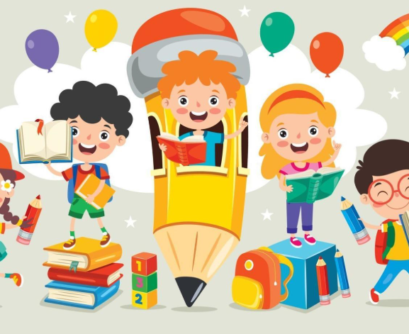

Distribuição de Alimentos
Levamos alimentos saudáveis para famílias em situação de vulnerabilidade.
Saiba Mais



Conheça as iniciativas da Rede do Bem e como você pode participar.
Levamos alimentos saudáveis para famílias em situação de vulnerabilidade.
Saiba Mais